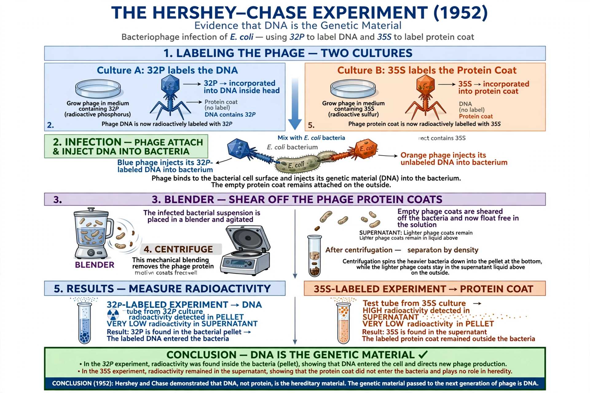

| Date | 1952 |
|---|---|
| Researchers | Alfred Hershey and Martha Chase |
| Location | Cold Spring Harbor Laboratory |
| System | T2 bacteriophage infecting E. coli |
| Conclusion | DNA is the genetic material |

The Hershey–Chase experiments were a series of experiments conducted in 1952 by Alfred Day Hershey and Martha Chase that helped to confirm that DNA is genetic material. While DNA had been known to biologists since the work of Friedrich Miescher in 1869, many initially believed that proteins carried genetic information, because proteins seemed more complex.
Hershey and Chase used the T2 bacteriophage, a virus that infects Escherichia coli and consists of only a protein coat surrounding DNA. They grew phage in two batches: one with radioactive phosphorus-32, which is incorporated into DNA but not protein, and one with radioactive sulphur-35, which labels protein but not DNA. After allowing the phage to infect bacteria, they agitated the mixture in a blender to strip the empty phage coats from the cell surfaces, then separated the components by centrifugation.
The phosphorus label was found inside the bacterial cells and in the next generation of phage, while the sulphur label remained with the discarded coats. The experiment demonstrated that DNA, not protein, enters the host cell and carries the instructions for making new viruses. Combined with the 1944 Avery–MacLeod–McCarty experiment, it convinced the scientific community that DNA is the hereditary molecule — setting the stage for Watson and Crick's double helix a year later.
Hershey was part of the phage group organized by Max Delbrück; he shared the 1969 Nobel Prize in Physiology or Medicine with Delbrück and Salvador Luria. The work is a classic of experimental design, often remembered by its nickname, the "blender experiment."
From Wikipedia, the free encyclopedia. Recreated from memory.